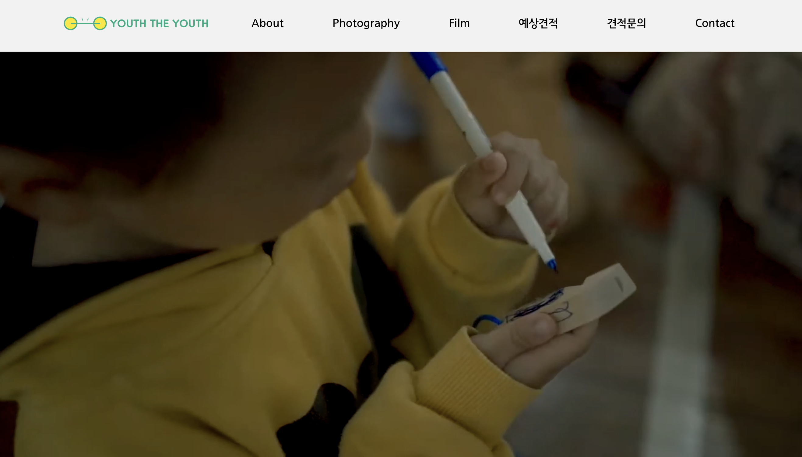
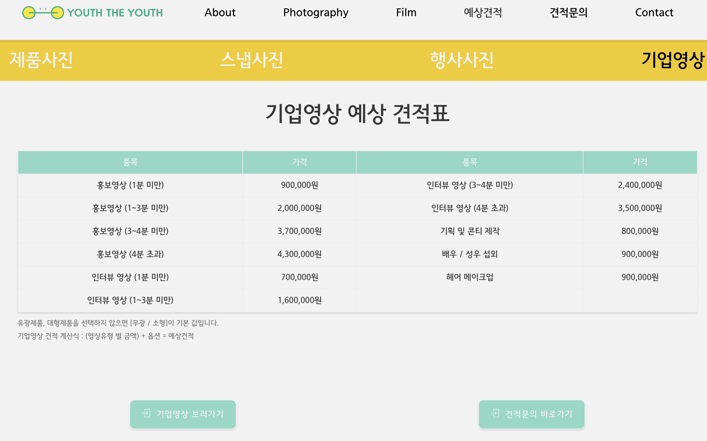
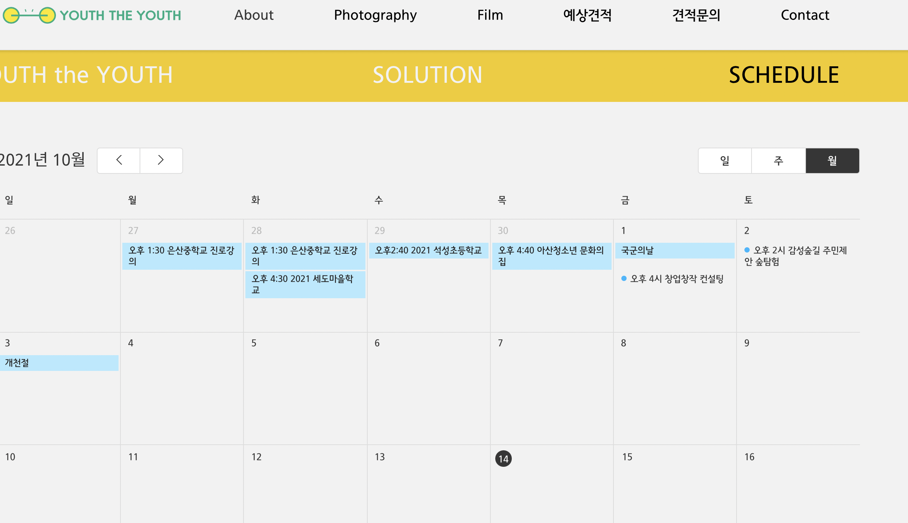
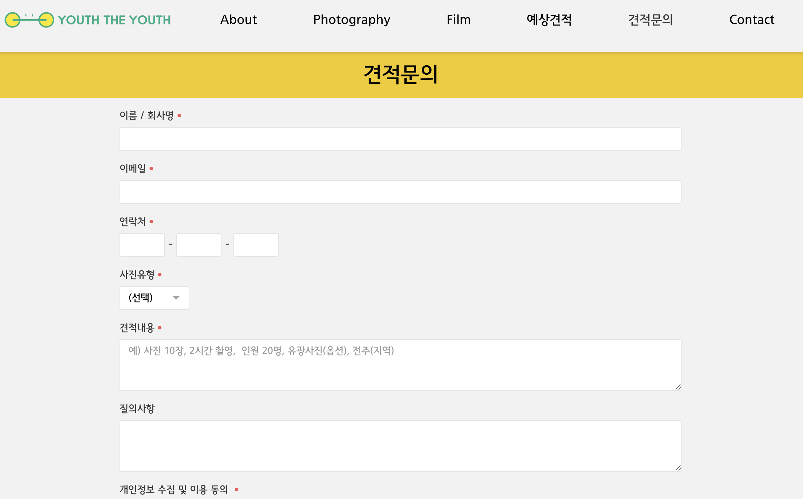
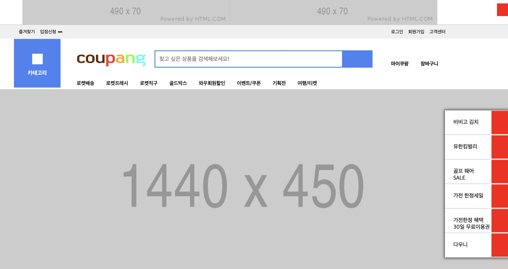
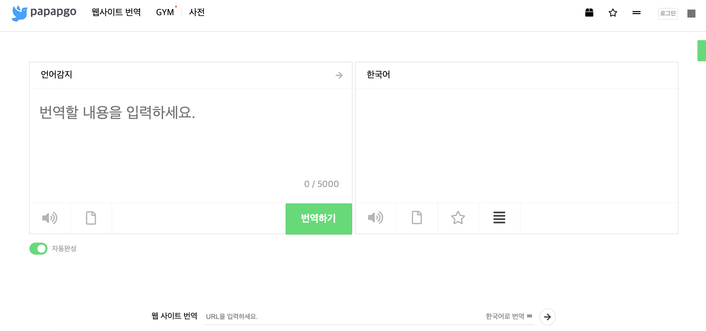
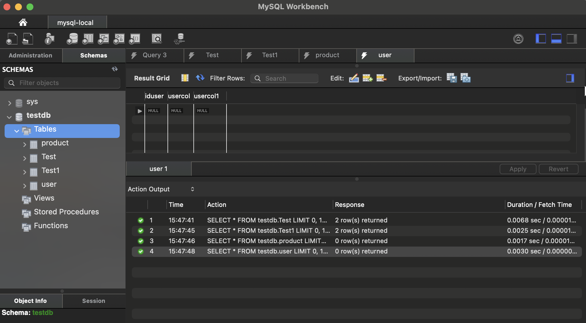

-
KAKAOTALK CLONE & TYPESCRIPT BLOCKCHAIN
카카오톡의 HTML, CSS 를 구현한 카카오톡 클론입니다.
프론트엔드 개발 입문 첫 미니프로젝트입니다.
CSS Animation, MediaQuery를 활용한 layout 등
기초를 꼼꼼하게 다지며 시작했습니다. -
대구AI스쿨
대구 ai스쿨은 대구시와 마이크로소프트의 협약으로
시작된 교육과정입니다.
발전하는 ai기술과 웹 개발의 기초를 토대로 교육과정동안
네이버, 트위치, 스타트업 기업의 웹사이트 약 16개이상을
프로젝트형식으로 카피캣했습니다.
PROJECT
-
유스더유스 홈페이지
대구 ai스쿨 커리큘럼 - 팀 프로젝트를 수행하며
3인조 팀원과 함께한 첫 팀프로젝트입니다.
실제 사진기업의 외주를 받아 기획부터
수정, 기능구현, 호스팅까지
웹사이트의 뼈대를 웹빌더로 기능과 CSS를
직접기입하여 완성했습니다.- 

- 
- 
- 
-
개인 프로젝트
교육과정 이외에 개인적으로 해본 프로젝트들입니다.
웹 프론트엔드 기반으로 혼자 프로젝트를 수행했습니다.- 
- 
- 